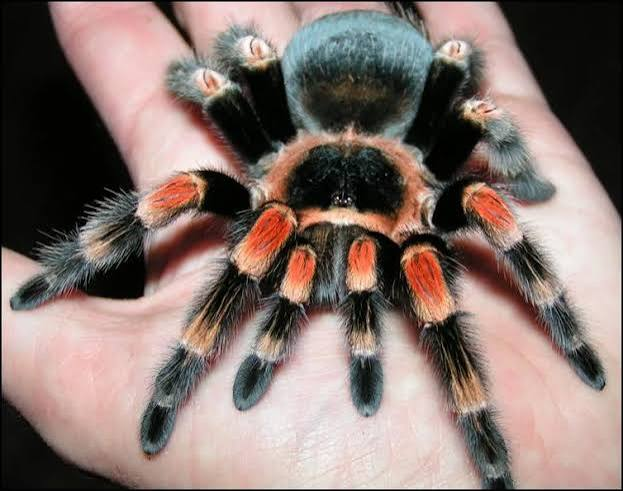
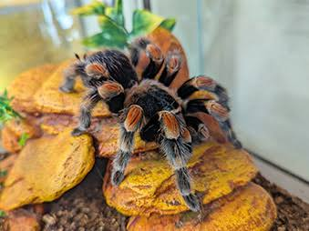
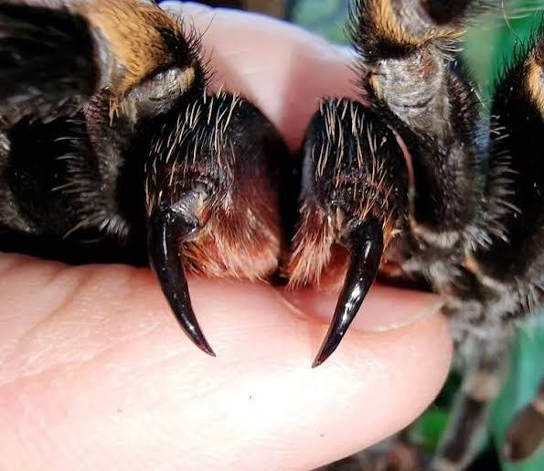
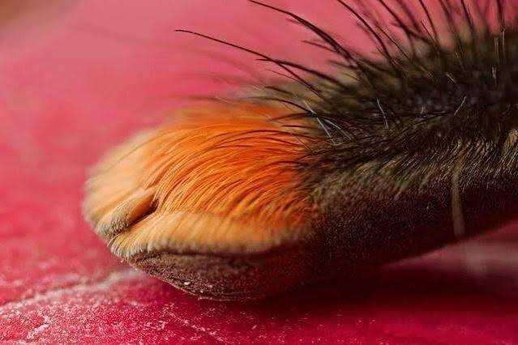
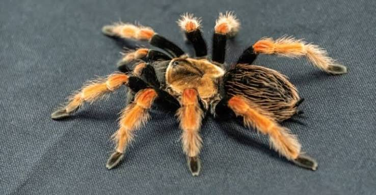
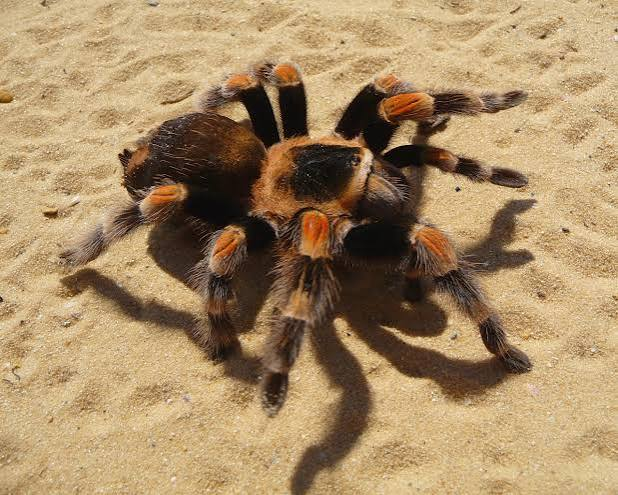

When it comes to Mexican Red Knee they typically live in deserts, dry areas, and some forests. Females can live up to 25-30 years,
males usually live up to 5-10 years after maturing. There is about up to 1,100+ tarantulas, and unlinke many of the other spiders,
they have different webbing. Instead of the traditional webs they use, silk line burrows, build egg sacs, and they also lay down
warning tripwires. The tarantulas usually do this to catch their prey, they also have small tiny claws that helps them when it
comes to climibing onto rough surfaces, sometimes they can even climb on the glass.
The "fur" on the Mexican Red Knee isn't acutally fur, it's called "Setae", the setae goes around their body, legs, and head. People have
explanied how the setae feels like fiberglass, they also said how it can be senstive to touch. It can cause irritation, a rash,
small bumps. It just depends on how your body will react to it, and just like every other spider, the tarantulas have poisonous venom;
SOME tarantulas can be lethal. However, the Mexican Red Knee would just be mild but not medically affective. It will cause you
to get a bump and a rash, same affects as the setae. The pain should disapper in a few hours.



The Red Knee spide tend to eat: fruit flies, pinhead crickets, and other small insects.
However, once in awhile you can give them: small lizards, frogs, or a dead pinky mouse. It would be the better option to only
give frogs, dead pink mouse, or small lizards only occcusionaly. They tend to give a protein boost, people use to say that
giving a mouse to the tarantulas can get them sick, this has been debunked. A dead mouse can give a lot of protein to a
tarantulas, espically after they are done molting / sheding.



If you gave an alive mouse to the tarantuals it can hurt them, considering the mouse can fight against it and
potentially hurt them in the porces. To give a mouse the correct way, people tend to buy a frozen dead mouse,
when they get home they deforst it and then feed it to the spider.
The spiders also have little paws, they also have smallhairs called claw tuff (or also called scopulae), in between their paws they have small
hooks that allows them to climb better.